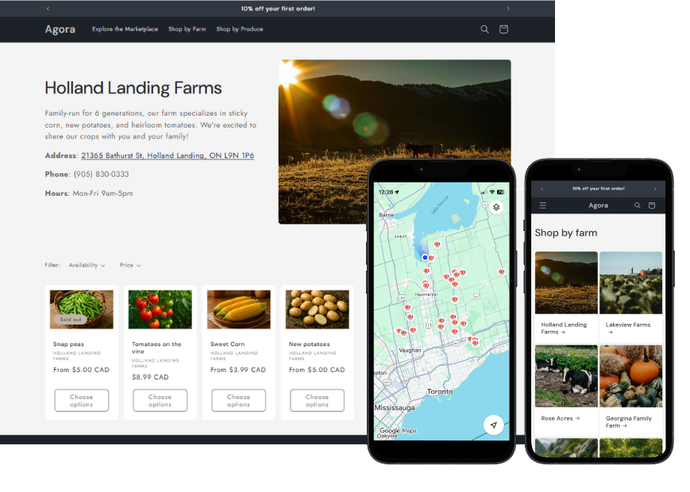

The new way to grocery shop is here.
Introducing Ontario's online farmers' market
Agora is Ontario's marketplace for all locally-grown produce, connecting farmers and consumers through one convenient online shopping platform.
Affordable
Shorter supply chain = lower prices for consumers + higher margins for farmers
Accessible
The convenience of online shopping brought to your local farmers' market
About Agora

Agora is a tech-driven platform that connects local farmers directly with consumers—drawing inspiration from traditional farmers’ markets while reimagining regional produce distribution for the digital age.
Through a streamlined supply chain and digital-first shopping experience, our goal is to strengthen regional food systems, empower small and medium-scale farmers, and make fresh, locally sourced produce affordable and accessible to every household.
Welcome to Ontario's online farmers' market.
Making groceries make sense. Affordable. Accessible. Local.
For Consumers
Discover the vast array of fresh, seasonal Ontario produce grown from local farms near you. Skip the middleman and enjoy farm-fresh quality at affordable prices.
For Farmers
Reach a broader customer base than ever before—without the overhead of traditional retail channels or low margins of wholesale.
We handle the tech, marketing, and logistics so that you can focus on what you do best and scale your business worry-free.
For the Local Economy
One weekly grocery order at a time, we can build a stronger food economy for Ontario. By supporting nearby farms and choosing regional produce, you're contributing to a more resilient, equitable, and sustainable food system—one that puts the local economy first and keeps fresh food moving directly from local fields to local tables.
Frequently Asked Questions
For Farmers
Signing Up and Setting Up
-
How do I do sign up for Agora?
To sign up for Agora, navigate to the "Join" button and fill out the registration form. A member of our team will reach out to you shortly! -
What happens after I sign up?
After you sign up, our team will create an Agora store for your farm. You will receive an email with your login credentials and instructions on how to access your Agora store.
Once your store is created, you will be able to list produce and manage orders from customers. You can also manage your store's inventory and orders from the Agora dashboard.
Managing my Agora Farmer Stall
-
What is an Agora Farmer Stall?
An Agora Farmer Stall is a digital storefront where you can list and sell your products directly to customers. Each farm listed on Agora has its own independent stall. -
How do I add new products to my Agora Stall?
Once you are in your store, click on the "Products" tab, then navigate to the "Products Listing" menu. Finally, click on "Add Product" and fill in the details, including description, price, and images. To ensure that products are relevant to our online marketplace, each new product is approved by our team. -
Can I manage multiple Agora Stalls?
At this point, each farm can only have one Agora Stall. -
How do I edit or update an existing product listing?
If your produce is "live", navigate to the "Products" tab, locate the product, and click "Edit". You can modify the description, update images, adjust pricing, or change stock levels. After saving, the updated listing will be live immediately. -
What is the best way to set up inventory levels and receive low‑stock alerts? - TO CONFIRM
In the product edit screen, set the current quantity in the "Inventory" field. Enable the “Low‑Stock Alert” toggle to receive an email when stock falls below the threshold you specify. This helps you restock in time and avoid selling out of products. -
Can I offer discounts on products?
Yes—under the product’s listing, you can apply discounted pricing to a specific product. -
How do I schedule or automate product listings for future dates?TO CONFIRM
While adding or editing a product, use the “Publish Date” field to pick a future date. The product will automatically become visible on that day, which is ideal for seasonal launches or limited‑time offers. -
How do I change my in-store pickup hours?TO CONFIRM
To modify your pick-up hours, navigate to your store’s settings and adjust the “Pick-up Hours” field. -
What tools are available for tracking sales performance and customer traffic?
The Agora Dashboard provides real‑time analytics: total sales, average order value, most‑sold items, and traffic sources. Export reports in CSV or PDF for deeper analysis. -
How can I manage order cancellations or returns directly from the dashboard?
At launch, order cancellations before fulfillment can be cancelled. Once a order is marked approved, the customer is no longer eligible for a refund. Agora does not support returns for produce. -
How do I handle promotions or coupon codes? TO CONFIRM
In the “Promotions” section, click “Create Coupon”. Define the discount type (percentage, fixed amount), expiration date, usage limits, and applicable products or categories. Share the coupon code with customers via email or social media. -
What support is available if I encounter a technical issue with my store?
You can also email support@agora.ca. Our team typically responds within a few hours and will guide you through any troubleshooting steps. -
I am going on vacation. How can I disable my store? TO CONFIRM
To disable your store temporarily, you can send an email to support@agora.ca requesting a temporary disablement.
Fulfilling Orders
-
What happens when a customer places an order?TO CONFIRM
When a customer places an order, you'll receive a notification to accept the order. Once accepted, the customer will pick up the order based on your store's opening hours. -
How does fulfillment happen?TO CONFIRM
At launch, Agora only offers in-store pickup, based on the store's opening hours. Once the customer picks up the order, the order is marked complete by both the buyer and farmer. -
How do I track my orders and shipments?TO CONFIRM
Use the "Order Management" feature to view all your orders, filter them by status, and track shipments in real-time. -
What happens if I encounter issues with an order?
If you have any issues with an order, contact our support team for assistance.
Financials
-
How often does Agora distribute payments to store-owners? TO CONFIRM
Agora Inc. distributes payments to store-owners at the end of every business day for fulfilled orders. -
Does Agora collect sales tax? TO CONFIRM
TBD
Contact Us
Grow with us—on both sides of the table. Whether you're a farmer ready to grow your reach or a shopper looking for fresh, affordable produce for you and your family, we'd love to hear from you.
Send us a note or join the waitlist to stay updated on our launch and be the first to know when we go live. ✨